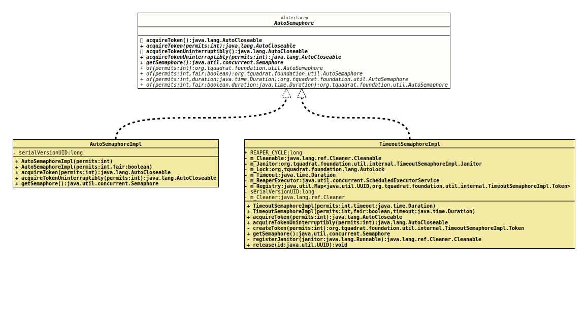

- All Known Implementing Classes:
AutoSemaphoreImpl,TimeoutSemaphoreImpl
An implementation of
Semaphore
that allows to be used with try-with-resources.
Use this class like this:
final static final int MAX_AVAILABLE = …
final AutoSemaphore semaphore = AutoSemaphore.of( MAX_AVAILABLE );
…
try( final var token = semaphore.acquireToken() )
{
// Do something …
}
catch( final InterruptedException e )
{
// Handle the exception …
}
A call to
of(int,Duration)
or
of(int,boolean,Duration)
creates a AutoSemaphore instance whose permits will be released
automatically after the given period of time. Do not acquire permits from
the instance returned by a call to
getSemaphore()
on such an instance, as it may behave unexpectedly.
- Author:
- Thomas Thrien (thomas.thrien@tquadrat.org)
- Version:
- $Id: AutoSemaphore.java 1136 2024-05-30 18:25:38Z tquadrat $
- Since:
- 0.4.8
- UML Diagram
-

UML Diagram for "org.tquadrat.foundation.util.AutoSemaphore"
{kind=link}
-
Method Summary
Modifier and TypeMethodDescriptiondefault AutoCloseableAcquires a permit from this semaphore, blocking until one is available, or the thread is interrupted, and returns a token object that is used fortry-with-resources.acquireToken(int permits) Acquires the given number of permits from this semaphore, blocking until all are available, or the thread is interrupted, and returns a token object that is used fortry-with-resources.default AutoCloseableAcquires a permit from this semaphore, blocking until one is available, and returns a token object that is used fortry-with-resources.acquireTokenUninterruptibly(int permits) Acquires the given number of permits from this semaphore, blocking until all are available, and returns a token object that is used fortry-with-resources.Returns a reference to the raw semaphore.static AutoSemaphoreof(int permits) Creates anAutoSemaphoreinstance with the given number of permits and non-fair fairness setting.static AutoSemaphoreof(int permits, boolean fair) Creates anAutoSemaphoreinstance with the given number of permits and the given fairness setting.static AutoSemaphoreCreates anAutoSemaphoreinstance with the given number of permits and the given fairness setting.static AutoSemaphoreCreates anAutoSemaphoreinstance with the given number of permits and non-fair fairness setting.
-
Method Details
-
acquireToken
Acquires a permit from this semaphore, blocking until one is available, or the thread is interrupted, and returns a token object that is used for
try-with-resources.Acquires a permit, if one is available and returns immediately, reducing the number of available permits by one.
If no permit is available then the current thread becomes disabled for thread scheduling purposes and lies dormant until one of two things happens:
- Some other thread invokes the
release()method for this semaphore and the current thread is next to be assigned a permit; or - Some other thread interrupts the current thread.
If the current thread:
- has its interrupted status set on entry to this method; or
- is interrupted while waiting for a permit,
InterruptedExceptionis thrown and the current thread's interrupted status is cleared.- Returns:
- The token.
- Throws:
InterruptedException- The current thread was interrupted.
- Some other thread invokes the
-
acquireToken
Acquires the given number of permits from this semaphore, blocking until all are available, or the thread is interrupted, and returns a token object that is used for
try-with-resources.Acquires the given number of permits, if they are available, and returns immediately, reducing the number of available permits by the given amount. This method atomically acquires the permits all at once.
If insufficient permits are available then the current thread becomes disabled for thread scheduling purposes and lies dormant until one of two things happens:
- Some other thread invokes one of the
release()methods for this semaphore and the current thread is next to be assigned permits and the number of available permits satisfies this request; or - Some other thread interrupts the current thread.
If the current thread:
- has its interrupted status set on entry to this method; or
- is interrupted while waiting for a permit,
then an
InterruptedExceptionis thrown and the current thread's interrupted status is cleared. Any permits that were to be assigned to this thread are instead assigned to other threads trying to acquire permits, as if permits had been made available by a call torelease().- Parameters:
permits- The number of permits to acquire.- Returns:
- The token.
- Throws:
InterruptedException- The current thread is interrupted.IllegalArgumentException- The given number of permits to acquire is negative.
- Some other thread invokes one of the
-
acquireTokenUninterruptibly
Acquires a permit from this semaphore, blocking until one is available, and returns a token object that is used for
try-with-resources.Acquires a permit, if one is available and returns immediately, reducing the number of available permits by one.
If no permit is available then the current thread becomes disabled for thread scheduling purposes and lies dormant until some other thread invokes the
release()method for this semaphore and the current thread is next to be assigned a permit.If the current thread is interrupted while waiting for a permit then it will continue to wait, but the time at which the thread is assigned a permit may change compared to the time it would have received the permit had no interruption occurred. When the thread does return from this method its interrupt status will be set.
- Returns:
- The token.
-
acquireTokenUninterruptibly
Acquires the given number of permits from this semaphore, blocking until all are available, and returns a token object that is used for
try-with-resources.Acquires the given number of permits, if they are available, and returns immediately, reducing the number of available permits by the given amount. This method atomically acquires the permits all at once.
If insufficient permits are available then the current thread becomes disabled for thread scheduling purposes and lies dormant until some other thread invokes one of the
release()methods for this semaphore and the current thread is next to be assigned permits and the number of available permits satisfies this request.If the current thread is interrupted while waiting for permits then it will continue to wait and its position in the queue is not affected. When the thread does return from this method its interrupt status will be set.
- Parameters:
permits- The number of permits to acquire.- Returns:
- The token.
- Throws:
IllegalArgumentException- The given number of permits to acquire is negative.
-
getSemaphore
Returns a reference to the raw semaphore.- Returns:
- The semaphore.
-
of
Creates anAutoSemaphoreinstance with the given number of permits and non-fair fairness setting.- Parameters:
permits- The initial number of permits available. This value may be negative, in which case releases must occur before any acquires will be granted.- Returns:
- The new
AutoSemaphoreinstance.
-
of
Creates anAutoSemaphoreinstance with the given number of permits and the given fairness setting.- Parameters:
permits- The initial number of permits available. This value may be negative, in which case releases must occur before any acquires will be granted.fair-trueif this semaphore will guarantee first-in first-out granting of permits under contention, elsefalse.- Returns:
- The new
AutoSemaphoreinstance.
-
of
Creates anAutoSemaphoreinstance with the given number of permits and non-fair fairness setting.- Parameters:
permits- The initial number of permits available. This value may be negative, in which case releases must occur before any acquires will be granted.duration- The timeout for a permit; after the given period of time, an acquired permit will be released automatically.- Returns:
- The new
AutoSemaphoreinstance.
-
of
Creates anAutoSemaphoreinstance with the given number of permits and the given fairness setting.- Parameters:
permits- The initial number of permits available. This value may be negative, in which case releases must occur before any acquires will be granted.fair-trueif this semaphore will guarantee first-in first-out granting of permits under contention, elsefalse.duration- The timeout for a permit; after the given period of time, an acquired permit will be released automatically.- Returns:
- The new
AutoSemaphoreinstance.
-